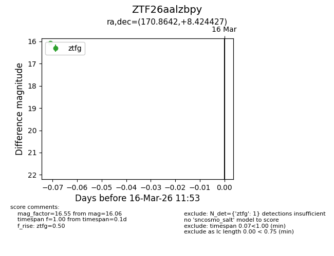
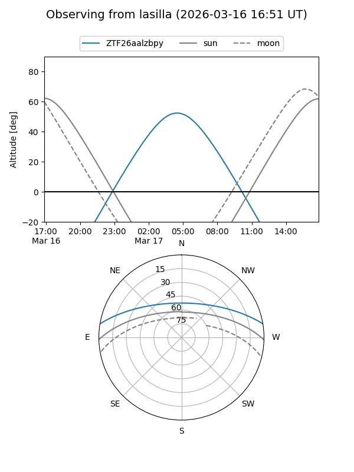
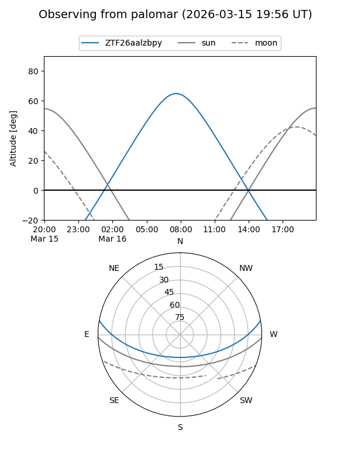

ZTF26aalzbpy
Target ZTF26aalzbpy at 2026-03-16 11:55
Aliases and brokers:
FINK: link
Lasair: link
ALeRCE: link
alt names
ZTF26aalzbpy (ztf,fink_ztf)
Coordinates:
equatorial (ra, dec) = 170.8642,+8.42443
equatorial (HMS+DMS) = 11:23:27.41,+08:25:27.94
galactic (l, b) = (250.7768,+62.01982)
Flags:
Photometry:
last ztfg=16.06
1 ztfg detections
Lightcurve

Visibility


Additional plots